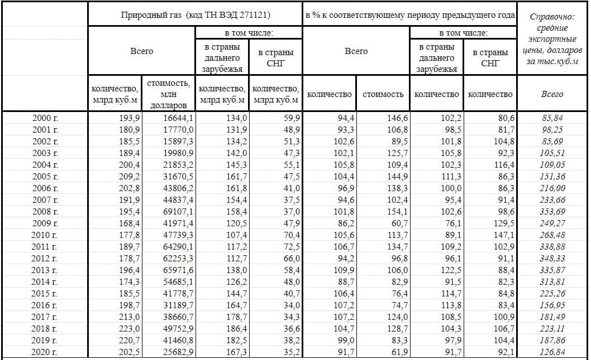

Средняя цена экспортируемого из России газа в 2021 г. значительно выросла, следует из данных Федеральной таможенной службы (ФТС) и расчетов «Ведомостей». Трубопроводный газ подорожал в среднем до $274 за 1000 куб. м, сжиженный (СПГ) – до $273 за 1 т. В 2020 г. трубопроводный газ и СПГ поставлялся за рубеж, по данным ФТС, по $140 за 1000 куб. м и по $228 за 1 т соответственно. То есть цена поставок через газопроводы поднялась почти в 2 раза, СПГ подорожал почти на 20%.
По данным ФТС, за 2021 г. «Газпром» по трубопроводам поставил зарубежным потребителям 203 млрд куб. м на $55,5 млрд. СПГ же было экспортировано 32 млн т на $8,8 млрд. В 2020 г. было поставлено 194 млрд куб. м за $27,2 млрд и 27,6 млн т за $6,2 млрд.
Заметим, что данные ФТС традиционно отличаются от итоговой статистики самого «Газпрома», которую компания отражает в отчетности. Ее продажи ФТС проводятся как трубопроводный газ (у «Газпрома» в России монополия на такие поставки), СПГ также могут поставлять «Новатэк» и «Роснефть». При этом статистика ФТС, судя по всему, перестала отражать поставки в Китай по газопроводу «Сила Сибири» в IV квартале 2021 г.
В начале января 2022 г. председатель правления «Газпрома» Алексей Миллер сообщал, что компания по итогам 2021 г. экспортировала в дальнее зарубежье (не включает поставки в страны СНГ. – «Ведомости») 185,1 млрд куб. м газа. Он добавил, что это на 5,8 млрд куб. м больше, чем в 2020 г., а результат 2021 г. вошел в четверку исторических рекордов компании. Закупку трубопроводного газа из РФ нарастили 15 стран, самый сильный прирост обеспечили потребители в Германии (+10,5%), Турции, (+63%) и Италии (+20,3%).
Экспортные цены «Газпрома» в декабре 2021 г., как следует из данных ФТС, достигли $518 за 1000 куб. м, что в 3,3 раза выше, чем в декабре 2020 г., когда цена была $157 за 1000 куб. м. СПГ подорожал в декабре в 2,3 раза – с $213 до $493 за 1 т. Основной объем газа из России идет в Европу – почти две трети. Для европейских стран цены выросли в 3,7 раза, для СНГ – на 48%.
Китаю, который ввозил в декабре в основном российский СПГ, пришлось платить $460 за 1 т вместо $152 за 1 т в декабре 2020 г.
Из данных ФТС следует, что для Италии средняя цена трубопроводного газа в декабре 2021 г. выросла в 4 раза относительно уровня декабря 2020 г. до $782 за 1000 куб. м, для Германии – на 113% до $385 за 1000 куб. м, для Турции – на 214% до $537 за 1000 куб. м.
Также резкий рост цены отмечен в декабре при поставках в Австрию (в 5,7 раза до $949 за 1000 куб. м), Польшу (в 5,2 раза до $851), Финляндию (в 5,3 раза до $988). При этом средняя стоимость трубопроводного газа для Казахстана в декабре составила, по данным ФТС, всего $27 за 1000 куб. м при общих символических поставках на $22 млн, а для Белоруссии – $131 за 1000 куб. м (рост на 1%) при месячном экспорте на $258 млн.
В декабре 2020 г. «Газпром» закладывал в бюджет компании на 2021 г. среднюю цену своего газа в $170 за 1000 куб. м. Как подчеркивал тогда зампред правления компании Фамил Садыгов, это на $44 больше, чем было заложено в бюджет 2020 г. Но с весны 2021 г. рост спроса на газ в Европе, уход СПГ на премиальный азиатский рынок, дефицит газа в подземных хранилищах (ПХГ) спровоцировали подъем спотовых цен на газ в Европе. В итоге во второй половине года газовые фьючерсы на споте в ЕС начали бить рекорды, а в декабре котировки поднимались выше $2200 за 1000 куб. м. По данным биржи ICE, 10 февраля на голландском хабе TTF мартовский фьючерс стоил около $877 за 1000 куб. м.
«Газпром» в своих данных может отражать цены продажи газа, который был закачан в европейские ПХГ в предыдущие периоды, но не был продан, а ФТС уже могла эти поставки отразить в составе экспорта, так как право собственности на него могло перейти к европейским «дочкам» «Газпрома», отметил директор группы корпоративных рейтингов АКРА Василий Танурков. По его словам, этим объясняется разница в оценке средней цены экспорта газа у «Газпрома» и ФТС. Он также добавил, что часть поставок газа «Газпрома» – перепродажа сырья сторонних производителей, что не учитывает ФТС. По мнению генерального директора «Infoline-аналитики» Михаила Бурмистрова, данные «Газпрома» и ФТС отличаются из-за того, что контракты монополии частично включают фиксированные цены, а также привязку цены к нефтепродуктовой корзине и спотовым котировкам на газ в Европе. «Но из-за волатильности спота и частично стоимости нефтепродуктовой корзины возникают ценовые колебания, которые статистика ФТС не учитывает», – полагает эксперт.
ссылка